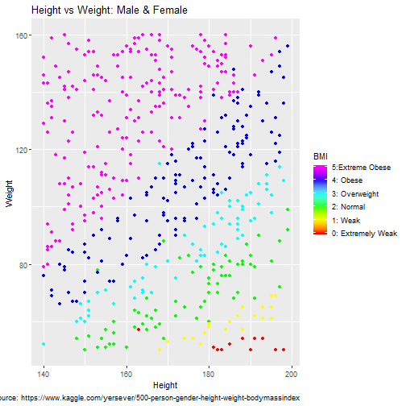

Objective:
- Use the 500 Person Gender-Height-Weight-Body Mass Index (BMI) dataset from Kaggle
- Predict a person's BMI given his/her Height and Weight measurements using a linear regression model
- Provide visualization of dataset statistics
Karla Khalid
Objective:
##
## Call:
## lm(formula = Index ~ Height + Weight, data = BMIdata)
##
## Residuals:
## Min 1Q Median 3Q Max
## -2.34074 -0.38219 0.06156 0.39778 1.11542
##
## Coefficients:
## Estimate Std. Error t value Pr(>|t|)
## (Intercept) 6.1211460 0.2771076 22.09 <2e-16 ***
## Height -0.0349686 0.0015487 -22.58 <2e-16 ***
## Weight 0.0336751 0.0007832 43.00 <2e-16 ***
## ---
## Signif. codes: 0 '***' 0.001 '**' 0.01 '*' 0.05 '.' 0.1 ' ' 1
##
## Residual standard error: 0.5665 on 497 degrees of freedom
## Multiple R-squared: 0.8259, Adjusted R-squared: 0.8252
## F-statistic: 1179 on 2 and 497 DF, p-value: < 2.2e-16
